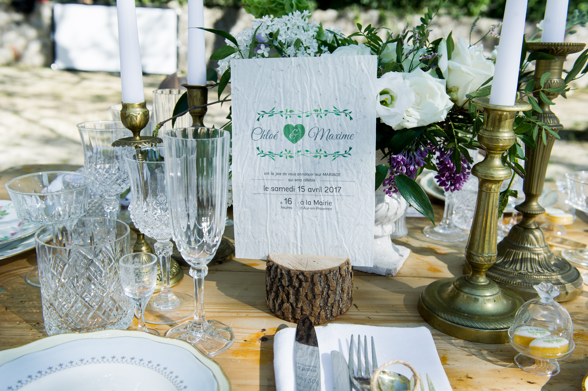

![[Mariage Green] Les faire-parts](../../blog/images/mariage-green-faire-part.jpg)
Une fois que vous aurez trouvé votre lieu de réception éco-responsable et votre traiteur bio et local, vous pourrez crier haut et fort la date de votre mariage. En effet, c’est souvent le lieu d
Une fois que vous aurez trouvé votre lieu de réception éco-responsable et votre traiteur bio et local, vous pourrez crier haut et fort la date de votre mariage. En effet, c’est souvent le lieu de réception qui va définir la date avant même d’avoir déposé le dossier à la mairie (dans le Sud en tout cas !). Se posera donc la question de l’annonce : comment la faire ? et à qui ?
Pourquoi envoyer un faire-part ?
Pour deux choses : annoncer votre mariage et inviter au vin d’honneur et/ou au dîner de noces qui suivra. Vous pourrez aussi glisser une invitation pour le lendemain du mariage si vous le souhaitez.
Faites la liste de vos invités avec leur présence souhaitée. On peut tout à fait dissocier les invités présents uniquement au vin d’honneur et au repas. Tout est une question de formulation (et de budget !). Une fois que vous aurez cette liste, vous pourrez savoir combien de faire-part vous devrez envoyer.
Et le Save-the-date ?
Il s’en fait de plus en plus ! Attention, le Save-the-date ne remplace pas le faire-part.
Le STD permet de prévenir le plus tôt possible vos convives pour qu’ils réservent la date avant l’envoi officiel du faire-part. Par exemple, vous vous mariez le week-end très prisé du 14 juillet. Vous savez un an avant que ce sera cette date alors envoyez un STD permettra à vos proches de bloquer cette date pour votre mariage. Vous éviterez les déconvenues comme : « ah bon tu te maries ce jour là ? mais j’ai déjà un mariage/anniversaire/voyage… ».
L’avantage du STD réside dans sa simplicité. Généralement, un an avant, vous ne connaissez pas encore vos heures de passages à la mairie, ni votre heure d’arrivée sur le lieu de réception pour le début du cocktail. Vous devrez indiquer : le jour et la ville du mariage.
Idées éco-responsables
Le numérique
A l’heure du numérique, vous ne passerez pas à côté de l’e-mail ! Grâce à ce média, vos contenus peuvent être interactifs, sous forme de vidéo, avec de la musique et j’en passe ! Plusieurs sites permettent d’envoyer des invitations par mail mais vous pouvez opter pour le fait-maison grâce au logiciel Mailjet.
Toujours dans le numérique, pourquoi ne pas opter pour le site web de mariage ? Petit Mariage Entre Amis propose une interface bien faite, complète et avec un maximum de choses gratuites.
Le papier recyclé ou ensemencé
Si vous souhaitez avoir un format classique, optez donc pour du papier recyclé et des encres végétales. Le tout, idéalement produit par une imprimerie ayant le label Imprim’vert.
Une fois que vous aurez vos invitations, il faudra les affranchir. Pour se faire, je vous conseille les timbres verts personnalisables de La Poste. Il y a de très jolis visuels et la lettre verte est respectueuse de l’environnement (distribution en J+2).
♥ Dernière option et pas des moindres ! Ma préférée absolue, j’ai nommé le papier ensemencé chez growingpaper.fr ou papierfleur.fr. Il s’agit d’un papier contenant de petites graines (fleurs des champs ou herbes aromatiques) qui, une fois dans la terre, pousse ! On peut écrire dessus ou imprimer au jet d’encre, cela fonctionne comme un papier classique mais en mille fois plus poétique !
{kind=link}

Et vous, quelles sont vos astuces pour des faire-parts éco-responsables ?